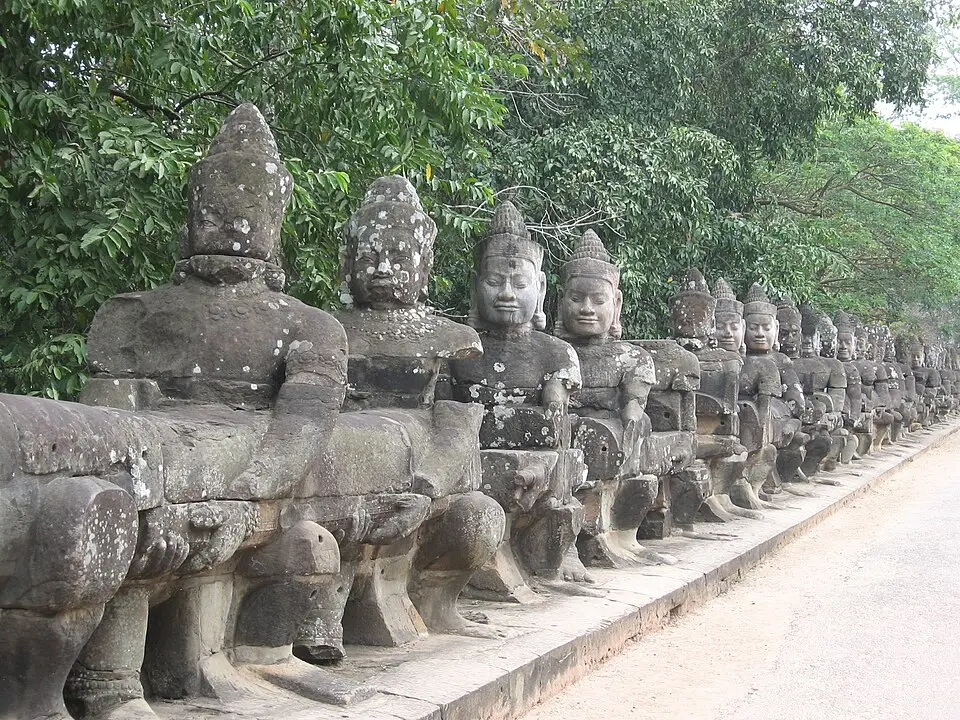
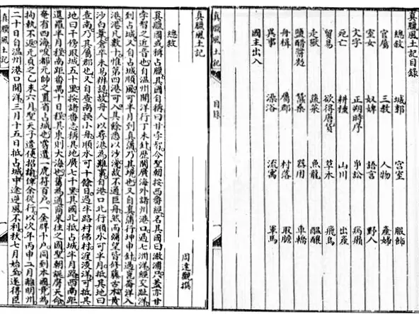
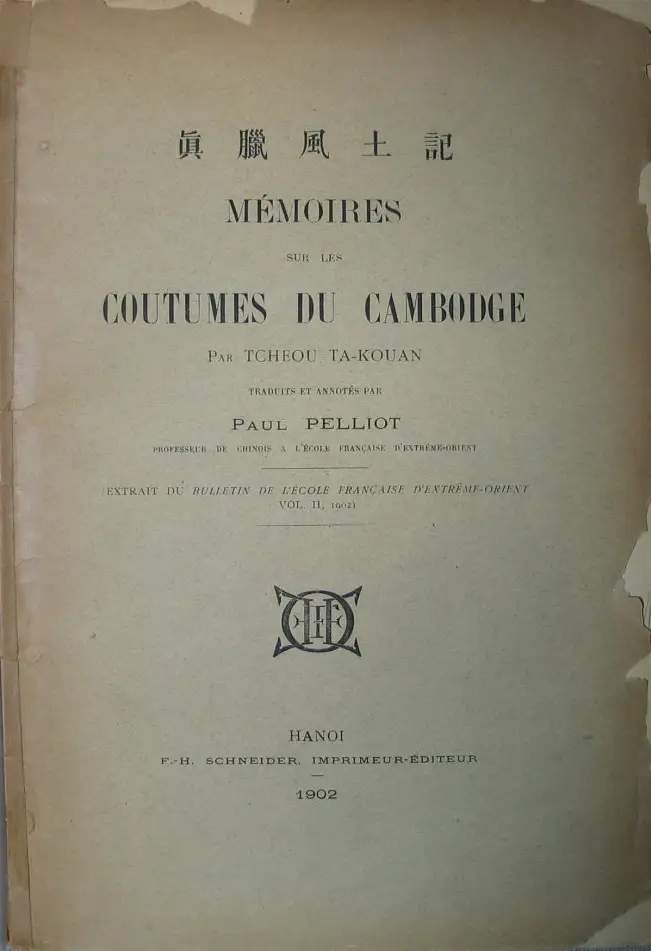

Angkor qua mắt Chu Đạt Quan: nhân chứng duy nhất của đế quốc Khmer
Tháng 8 năm 1296, một viên quan nhỏ người Ôn Châu theo sứ đoàn nhà Nguyên đến kinh đô Angkor và ở lại gần một năm. Cuốn sổ ghi chép của ông là lời kể tận mắt duy nhất còn sót lại về đời sống hằng ngày trong đế quốc Khmer.

Tháng 8 năm 1296, một chiếc thuyền nhỏ từ Biển Hồ Tonlé Sap cập gần kinh đô Yaśodharapura, nay gọi là Angkor Thom. Trên thuyền có Chu Đạt Quan, người Vĩnh Gia (Ôn Châu, Chiết Giang), thành viên sứ đoàn do Nguyên Thành Tông phái sang Chân Lạp. Ông ở đó mười một tháng, sống trong một ngôi nhà gần cổng bắc thành. Mọi điều chúng ta biết về chợ búa, quần áo, lễ rước của người Angkor từ chính miệng một người đương thời đều đến từ ông.
Chuyến đi theo la bàn
Ngày 20 tháng 2 năm 1296, sứ đoàn rời cảng Minh Châu (nay là Ninh Ba) trên một con thuyền đi biển có la bàn. Thuyền ghé qua Phúc Châu, Quảng Châu, Tuyền Châu, đảo Hải Nam, rồi men theo bờ biển miền Trung Việt Nam ngày nay, dừng ở Chiêm Thành, gần Quy Nhơn. Từ vùng Bà Rịa và Côn Đảo, thuyền vào sông Mê Kông, ngược lên Tonlé Sap. Đoạn cuối, Chu đổi sang thuyền nhỏ, đi thêm hơn mười ngày qua Biển Hồ mới tới kinh đô.
Điều lạ là chính sử nhà Nguyên không chép gì về sứ đoàn này. Nếu không có cuốn sách của Chu, chuyến đi gần như không để lại dấu vết. Và cuốn sách ấy ghi lại những thứ mà không nguồn nào khác chép.
Một thành phố nhìn từ mặt đất


Chu tả kinh thành vuông vức, có năm cổng, phía đông hai cổng, các hướng khác mỗi hướng một. Hào nước bao quanh, cầu bắc qua hào có 54 pho tượng kéo một con rắn thần chín đầu. Trên cổng có năm mặt Phật, bốn mặt nhìn bốn hướng, mặt giữa dát vàng. Cổng mở ban ngày, đóng ban đêm, chó và tù nhân không được vào thành.
Ông ghi những thứ mà văn bia không bao giờ chép. Người buôn bán đều là phụ nữ, bày hàng trên chiếu trải dưới đất và phải nộp tiền chỗ cho quan. Nhà dân không có bàn ghế, nấu cơm bằng nồi đất, múc canh bằng gáo dừa, đựng canh trong chén đan bằng lá. Người Khmer chỉ dệt vải bông, còn nghề nuôi tằm dệt lụa là do người Xiêm mới sang mang tới. Lính thì cởi trần, đi chân đất, tay phải cầm giáo, tay trái cầm khiên, không có cung tên hay áo giáp.
Ông còn kể một đám rước của vua Indravarman III: ba đến năm trăm cung nữ cầm nến thắp sáng giữa ban ngày, xe dê xe ngựa thếp vàng, quan lại cưỡi voi dưới lọng đỏ, cuối cùng là nhà vua đứng trên lưng voi, tay cầm thanh kiếm thiêng, ngà voi bọc vàng. Có một chi tiết nhỏ trong sổ ghi của ông mà đến nay du khách vẫn nhìn thấy tận mắt.
Ngày nay, trước Sân thượng Voi ở Angkor Thom vẫn còn đúng một dãy mười hai tháp, tên Khmer là Prasat Suor Prat, nghĩa là "tháp của người đi dây".
Mười hai ngọn tháp xử kiện

Một chi tiết bên lề về sau giúp các nhà nghiên cứu đọc được di tích. Chu viết rằng trước cung điện có mười hai ngọn tháp đá nhỏ. Khi hai người tranh chấp, mỗi người phải ngồi trong một tháp, họ hàng đứng canh bên dưới. Sau ba bốn ngày, ai sinh bệnh như mụn nhọt, sổ mũi, sốt thì là người có lỗi. Người ta gọi đó là phép xử của trời.
Ngày nay, trước Sân thượng Voi ở Angkor Thom vẫn còn đúng một dãy mười hai tháp, tên Khmer là Prasat Suor Prat, nghĩa là "tháp của người đi dây". Dân gian tin rằng người xưa căng dây giữa các tháp để làm xiếc trong lễ hội. Giới nghiên cứu cho rằng chuyện đi dây không có cơ sở. Chức năng thật của các tháp đến nay vẫn chưa rõ, còn Chu Đạt Quan thì viết rằng chúng dùng để phân xử.
Cũng có chi tiết gần với người Việt. Trong phần kể các quận thuộc Chân Lạp, Chu nhắc một nơi tên Trĩ Côn. Học giả Hứa Triệu Lâm cho rằng đó là một cách ghi âm khác của Sài Gòn. Đây mới là giả thuyết. Nhưng cuốn sách mang những lời ấy đến với ta không còn nguyên vẹn.
Sách chép gì, và thiếu gì


Cuốn Chân Lạp phong thổ ký được viết trong vòng mười lăm năm sau khi Chu về nước năm 1297, không rõ năm hoàn thành. Bản thời Nguyên đã mất. Bản còn lại chủ yếu dựa trên một tuyển tập thời Minh, mà nhà sưu tầm sách Tiền Tằng ở thế kỷ 17 chê là lộn xộn, thiếu sáu bảy phần mười. Các nhà nghiên cứu ước bản ngày nay chỉ còn khoảng một phần ba nguyên tác.
Chu cũng nhầm. Ông gọi các tu sĩ Ấn Độ giáo bằng những từ của Nho giáo và Đạo giáo, và các con số đo dài thường không chính xác. Ông chỉ được vào hoàng cung, không được vào nội cung. Ông nhìn Angkor bằng mắt một người Hoa thế kỷ 13, và đôi khi hiểu sai điều mình thấy.
Từ Pelliot đến người đọc hôm nay
Năm 1819, Abel Rémusat dịch sách sang tiếng Pháp nhưng ít ai để ý. Năm 1902, Paul Pelliot dịch lại, và bản này thành nền cho nhiều bản dịch sau. Ở Sài Gòn, Lê Hương xuất bản bản dịch tiếng Việt năm 1973. Năm 2007, Peter Harris làm bản dịch thẳng từ chữ Hán sang tiếng Anh hiện đại, sửa nhiều lỗi của các bản trước. Năm 1980, nhà khảo cổ Hạ Nại hoàn thành bản hiệu đính đối chiếu 13 dị bản.
Ngoài văn khắc trên tường đền, đây là nguồn viết duy nhất còn sót lại về đời thường ở Angkor. Lời ông còn giúp xác định tháng đầu năm trong lịch Khmer thời ấy là tháng Karttika. Một viên quan không được chính sử nhắc tên, nhờ một cuốn sổ chỉ còn một phần ba, vẫn là nhân chứng chính của cả một nền văn minh.